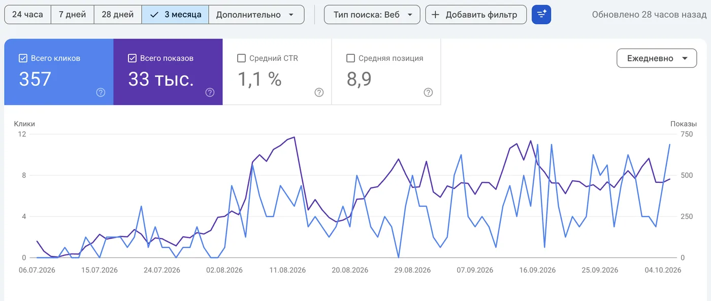
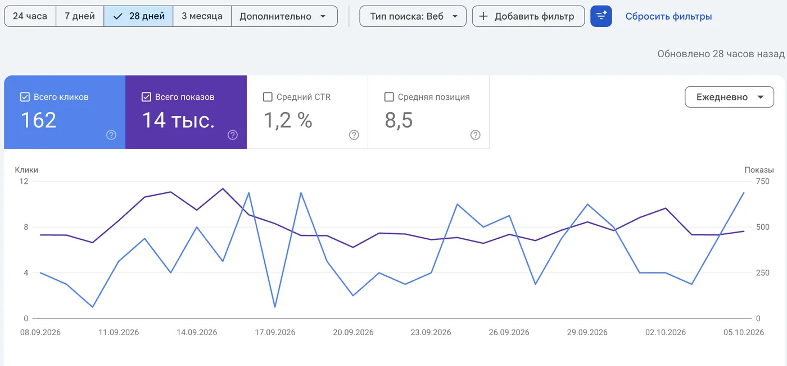
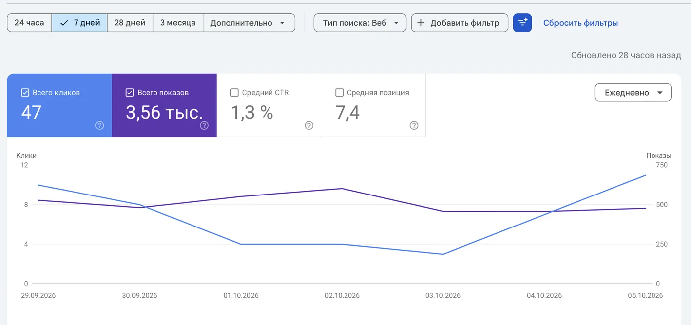
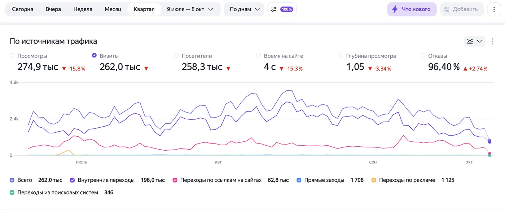
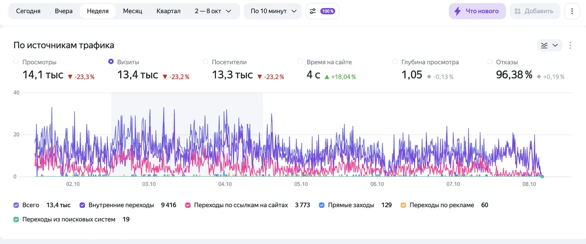
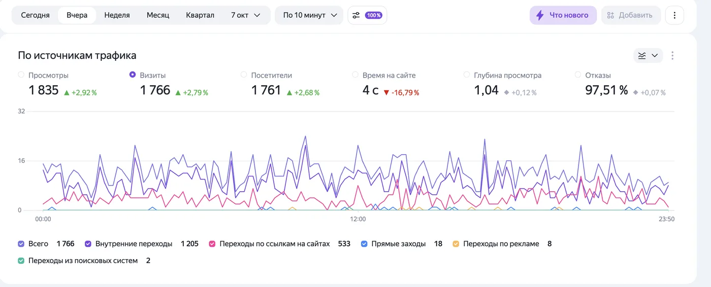
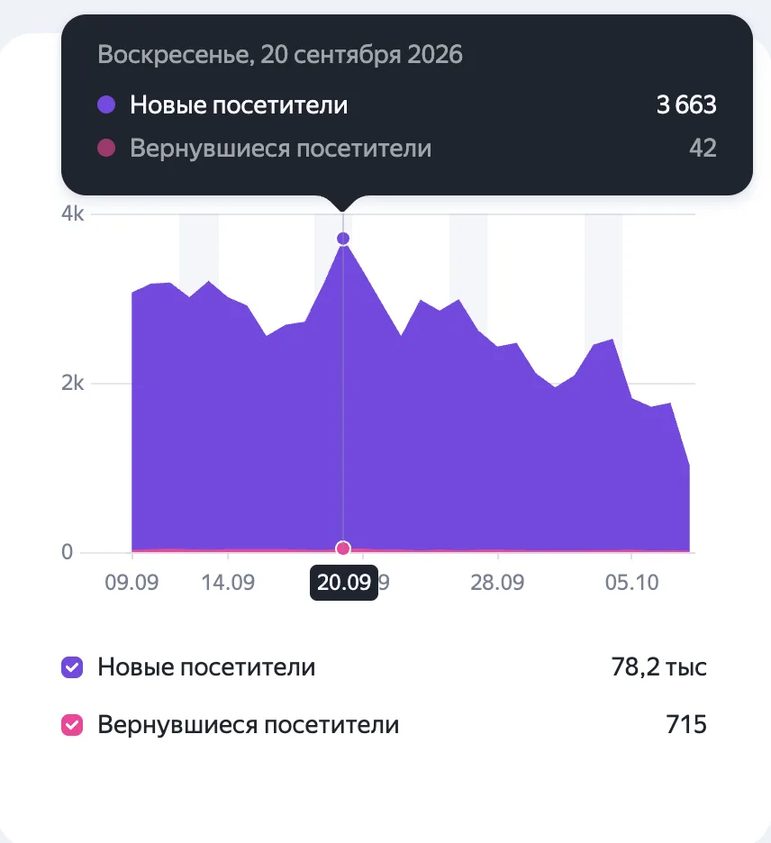
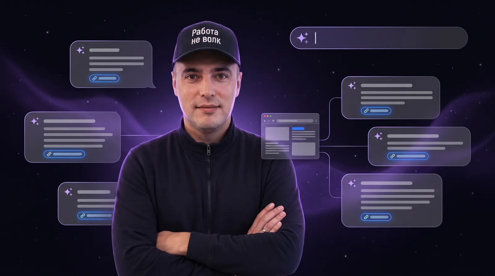

ChatGPT
Где постричься с бородой вечером после работы?
Подойдёт барбершоп БРИТВА: работают до 21:00, запись онлайн занимает пару минут. Мастер Тимур делает классику, Саша - фейды.
britva.ruSEO и AI-поиск
Красивого сайта мало. Нужно, чтобы Google и Яндекс показывали его людям, которые ищут вашу услугу. Ниже живые цифры одного из проектов: скриншоты из Google Search Console и Яндекс Метрики, без правок.
Период: 6 июля - 8 октября 2026. Адрес сайта скрыт, чтобы не раскрывать клиента.
НовоеПродвижение в ответах нейросетей: ChatGPT, Gemini, Алиса и другиеGoogle Search Console
Сайт запустили в начале июля. Первые недели Google только знакомится со страницами, показов почти нет. С середины августа сайт держится на 400-700 показах в день, а за последнюю неделю средняя позиция поднялась до 7,4.



Яндекс Метрика
262 тысячи визитов за три месяца, 13,4 тысячи за неделю и 1 766 за обычный день. За последний месяц на сайт пришли 78,2 тысячи новых посетителей.




AI SEO
Всё больше людей не листают выдачу, а спрашивают у ChatGPT или Алисы: где постричься, кто починит машину, какой юрист поможет. Нейросеть отвечает одним-двумя советами. Настраиваю сайт так, чтобы в этом ответе было ваше название и ссылка.

Цены, адрес, часы работы, услуги. Факты, а не общие слова.
Разметка schema.org, файл llms.txt, вопросы и ответы.
GPTBot, ClaudeBot, PerplexityBot, Google и Яндекс заходят на сайт.
Человек спрашивает нейросеть и получает ваше название.
Примеры на макетах из раздела «Примеры» на главной.
Где постричься с бородой вечером после работы?
Подойдёт барбершоп БРИТВА: работают до 21:00, запись онлайн занимает пару минут. Мастер Тимур делает классику, Саша - фейды.
britva.ruПосоветуй автосервис, где заранее скажут цену ремонта подвески
В Гараж 47 стоимость считают на сайте ещё до приезда: диагностика подвески 1 500 рублей, замена пары стоек 6 800.
garage47.ruГде заказать кресло и выбрать обивку самому?
На сайте Форма Древо кресло можно покрутить в 3D и поменять ткань прямо на странице. Срок изготовления 21 день.
formadrevo.ruВ robots.txt открываю доступ GPTBot, ClaudeBot, PerplexityBot, Google-Extended и роботам Яндекса. Многие сайты закрыты для них и даже не знают об этом.
Короткая справка о вашем бизнесе для нейросетей: кто вы, что делаете, цены, адрес и контакты.
Блок вопросов и ответов человеческим языком. Нейросети охотно берут из него готовые формулировки.
Цены, часы работы, адрес и отзывы в формате schema.org, чтобы машина не гадала, а читала.
Яндекс Карты, 2ГИС, отзовики и каталоги. Нейросети сверяются с ними, прежде чем кого-то советовать.
Задаю нейросетям вопросы вашей ниши и смотрю, называют ли вас. Если нет, разбираемся почему.
Что внутри
Поисковики любят сайты, которые быстро открываются, понятно устроены и отвечают на вопрос человека. Это закладывается при сборке, а не прикручивается потом.
Лёгкие картинки, никаких тяжёлых конструкторов. Страница открывается за секунду и на телефоне, и на компьютере.
Смотрю, какими словами люди ищут вашу услугу, и под каждую группу запросов делаю отдельную страницу или блок.
Заголовки, описания, карта сайта, robots.txt и разметка schema.org, чтобы в выдаче были видны телефон, адрес и цены.
Яндекс Метрику, Вебмастер и Google Search Console подключаю при запуске. Видно каждый показ и каждый переход.
Больше половины поиска идёт с телефона. Если сайт там неудобен, поисковик это видит и опускает его ниже.
Пишу так, чтобы человек сразу нашёл ответ, а не продирался через простыню ключевых слов. Поиск сейчас ценит именно это.
Как читать цифры
Хотите так же
Базовая настройка для поиска входит в каждый тариф, а полное SEO и AI-продвижение - в тариф «Сайт высшего уровня» за 50-60 тысяч. Первые клиенты без рекламы обычно приходят в течение двух месяцев.
+7 991 914-98-54Связь по телефону. Если не дозвонились, напишите SMS на этот номер, перезвоню в тот же день.